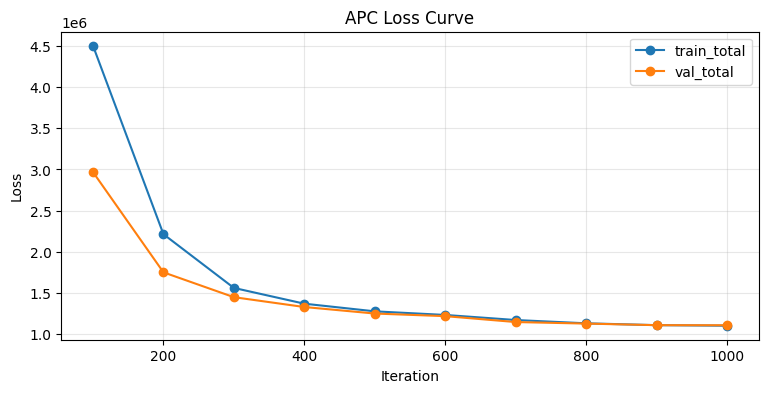
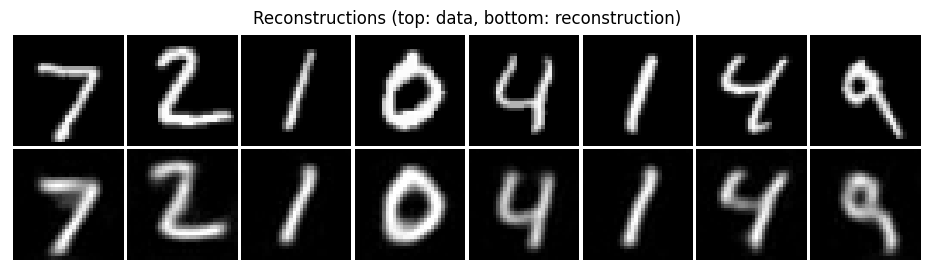

APC MNIST Training Example¶
This notebook is a compact, notebook-first APC training walkthrough for MNIST.
Design choices are intentionally fixed to keep code short:
Binomial data distribution
Conv-PC encoder
NN decoder
AdamW optimizer
MultiStepLR scheduler (milestones at 66% and 90%)
Training progress printed only at 10%, 20%, …, 100%
Inline metrics and reconstructions only (no checkpoint/JSON/image file outputs)
Imports¶
We keep imports explicit so you can quickly see which pieces handle modeling, training, and visualization.
Standard library: lightweight config and serialization helpers
PyTorch + Lightning Fabric: tensor ops and runtime orchestration
SPFlow APC modules: encoder/decoder/model/loss tooling
Torchvision + plotting stack: data loading and inline analysis
[35]:
from __future__ import annotations
# Standard-library helpers for config handling and lightweight reporting.
import json
import math
from dataclasses import asdict, dataclass
from pathlib import Path
# Core scientific stack used throughout the notebook.
import matplotlib.pyplot as plt
import pandas as pd
import torch
from torch import nn
from torch.optim import AdamW, Optimizer
from torch.optim.lr_scheduler import MultiStepLR
from torch.utils.data import DataLoader, random_split
# APC/SPFlow model components.
from spflow.modules.leaves import Binomial, Normal
from spflow.modules.leaves.leaf import LeafModule
from spflow.zoo.apc.config import ApcConfig, ApcLossWeights
from spflow.zoo.apc.decoders import NeuralDecoder2D
from spflow.zoo.apc.encoders.convpc_joint_encoder import ConvPcJointEncoder
from spflow.zoo.apc.model import AutoencodingPC
from spflow.zoo.apc.train import evaluate_apc
# Runtime orchestration and dataset transforms/utilities.
import lightning as L
from torchvision import datasets, transforms
from torchvision.utils import make_grid
Defaults¶
A single dataclass holds all fixed tutorial settings so runs stay reproducible and easy to modify.
These values prioritize a fast, stable guide run over full hyperparameter tuning.
[36]:
@dataclass
class Config:
"""Fixed configuration for this simplified APC MNIST tutorial notebook."""
# Reproducibility and dataset location.
seed: int = 0
data_dir: Path = Path("./data/mnist")
download: bool = True
# Input representation used in this notebook.
dist_data: str = "binomial"
image_size: int = 32
n_bits: int = 8
# Runtime execution settings.
device: str = "auto"
precision: str = "bf16-mixed"
num_workers: int = 0
# Training budget and dataset caps for notebook speed.
iters: int = 1000
batch_size: int = 128
val_size: int = 10_000
max_train_samples: int | None = 60_000
max_val_samples: int | None = 2_000
max_test_samples: int | None = 2_000
# Optimizer and scheduler hyperparameters.
lr_encoder: float = 1e-1
lr_decoder: float = 1e-3
weight_decay: float = 0.0
lr_gamma: float = 0.1
# Encoder/decoder architecture controls.
latent_dim: int = 64
conv_channels: int = 64
conv_depth: int = 3
conv_latent_depth: int = 0
conv_use_sum_conv: bool = False
num_repetitions: int = 1
nn_hidden: int = 64
nn_res_hidden: int = 16
nn_res_layers: int = 2
nn_scales: int = 2
nn_bn: bool = True
nn_out_activation: str = "identity"
# APC objective weighting and sampling setup.
rec_loss: str = "mse"
sample_tau: float = 1.0
w_rec: float = 1.0
w_kld: float = 1.0
w_nll: float = 1.0
grad_clip_norm: float | None = None
warmup_pct: float = 2.0
num_vis: int = 8
cfg = Config()
cfg
[36]:
Config(seed=0, data_dir=PosixPath('data/mnist'), download=True, dist_data='binomial', image_size=32, n_bits=8, device='auto', precision='bf16-mixed', num_workers=0, iters=1000, batch_size=128, val_size=10000, max_train_samples=60000, max_val_samples=2000, max_test_samples=2000, lr_encoder=0.1, lr_decoder=0.001, weight_decay=0.0, lr_gamma=0.1, latent_dim=64, conv_channels=64, conv_depth=3, conv_latent_depth=0, conv_use_sum_conv=False, num_repetitions=1, nn_hidden=64, nn_res_hidden=16, nn_res_layers=2, nn_scales=2, nn_bn=True, nn_out_activation='identity', rec_loss='mse', sample_tau=1.0, w_rec=1.0, w_kld=1.0, w_nll=1.0, grad_clip_norm=None, warmup_pct=2.0, num_vis=8)
Configuration Notes¶
When you start experimenting, change one group of settings at a time:
iters/batch_size: runtime and optimization smoothnesslatent_dim+ conv settings: encoder capacityw_rec,w_kld,w_nll: reconstruction vs regularization trade-off
Small, isolated changes make the loss table and reconstructions easier to interpret.
Minimal Helpers (Data, Model, Train)¶
This helper block keeps the rest of the notebook compact by grouping the end-to-end APC workflow:
Build deterministic dataset splits and loaders
Construct the Conv-PC encoder + neural decoder APC model
Configure optimizer and learning-rate schedule
Train for a fixed iteration budget with periodic validation
Build a reconstruction grid for qualitative inspection
[37]:
def seed_everything(seed: int) -> None:
"""Seed torch RNGs for reproducible notebook runs."""
torch.manual_seed(seed)
if torch.cuda.is_available():
torch.cuda.manual_seed_all(seed)
def resolve_device(name: str) -> torch.device:
"""Resolve the runtime device from `auto`, `cpu`, or `cuda`."""
if name == "auto":
return torch.device("cuda" if torch.cuda.is_available() else "cpu")
return torch.device(name)
def build_fabric(*, device: torch.device, precision: str) -> L.Fabric:
"""Create a single-device Lightning Fabric runtime."""
accelerator = "cuda" if device.type == "cuda" else "cpu"
return L.Fabric(accelerator=accelerator, devices=1, precision=precision)
class QuantizeToNBits:
"""Torchvision transform: map pixels to integer counts in [0, 2^n_bits-1]."""
def __init__(self, n_bits: int) -> None:
self.n_bits = int(n_bits)
def __call__(self, x: torch.Tensor) -> torch.Tensor:
max_value = float(2**self.n_bits - 1)
return torch.floor(x * max_value)
def _cap_subset(subset: torch.utils.data.Subset, max_samples: int | None) -> torch.utils.data.Subset:
"""Optionally cap a subset length for quick notebook iterations."""
if max_samples is None or max_samples >= len(subset):
return subset
return torch.utils.data.Subset(subset.dataset, subset.indices[:max_samples])
def build_loaders(cfg: Config) -> tuple[DataLoader, DataLoader, DataLoader]:
"""Build train/val/test dataloaders for MNIST with fixed binomial preprocessing."""
# Keep preprocessing fixed so architecture/loss changes are easier to compare.
if cfg.dist_data != "binomial":
raise ValueError(f"This notebook only supports dist_data='binomial', got {cfg.dist_data!r}")
tfm = transforms.Compose(
[
transforms.Resize((cfg.image_size, cfg.image_size)),
transforms.ToTensor(),
QuantizeToNBits(cfg.n_bits),
]
)
train_full = datasets.MNIST(root=str(cfg.data_dir), train=True, transform=tfm, download=cfg.download)
test_full = datasets.MNIST(root=str(cfg.data_dir), train=False, transform=tfm, download=cfg.download)
if cfg.val_size <= 0 or cfg.val_size >= len(train_full):
raise ValueError(f"val_size must be in [1, {len(train_full)-1}], got {cfg.val_size}")
# Use a seeded generator so train/validation split is deterministic.
gen = torch.Generator().manual_seed(cfg.seed)
train_subset, val_subset = random_split(
train_full, [len(train_full) - cfg.val_size, cfg.val_size], generator=gen
)
train_subset = _cap_subset(train_subset, cfg.max_train_samples)
val_subset = _cap_subset(val_subset, cfg.max_val_samples)
test_subset = _cap_subset(torch.utils.data.Subset(test_full, list(range(len(test_full)))), cfg.max_test_samples)
# Pin memory only when CUDA is used to speed up host-to-device copies.
pin = torch.cuda.is_available() and resolve_device(cfg.device).type == "cuda"
train_loader = DataLoader(train_subset, batch_size=cfg.batch_size, shuffle=True, num_workers=cfg.num_workers, pin_memory=pin)
val_loader = DataLoader(val_subset, batch_size=cfg.batch_size, shuffle=False, num_workers=cfg.num_workers, pin_memory=pin)
test_loader = DataLoader(test_subset, batch_size=cfg.batch_size, shuffle=False, num_workers=cfg.num_workers, pin_memory=pin)
return train_loader, val_loader, test_loader
def make_x_leaf_factory(n_bits: int):
"""Create the observed-data leaf factory (Binomial)."""
total_count_tensor = torch.tensor(float(2**n_bits - 1))
def _factory(scope_indices: list[int], out_channels: int, num_repetitions: int) -> LeafModule:
shape = (len(scope_indices), out_channels, num_repetitions)
probs = 0.5 + (torch.rand(shape) - 0.5) * 0.2
return Binomial(
scope=scope_indices,
out_channels=out_channels,
num_repetitions=num_repetitions,
total_count=total_count_tensor,
probs=probs,
)
return _factory
def make_z_leaf_factory():
"""Create the latent leaf factory (Normal)."""
def _factory(scope_indices: list[int], out_channels: int, num_repetitions: int) -> LeafModule:
shape = (len(scope_indices), out_channels, num_repetitions)
loc = torch.randn(shape)
logvar = torch.randn(shape)
scale = torch.exp(0.5 * logvar)
return Normal(
scope=scope_indices,
out_channels=out_channels,
num_repetitions=num_repetitions,
loc=loc,
scale=scale,
)
return _factory
def build_model(cfg: Config) -> AutoencodingPC:
"""Build a fixed Conv-PC encoder with an NN decoder."""
encoder = ConvPcJointEncoder(
input_height=cfg.image_size,
input_width=cfg.image_size,
input_channels=1,
latent_dim=cfg.latent_dim,
channels=cfg.conv_channels,
depth=cfg.conv_depth,
kernel_size=2,
num_repetitions=cfg.num_repetitions,
use_sum_conv=cfg.conv_use_sum_conv,
latent_depth=cfg.conv_latent_depth,
architecture="reference",
perm_latents=False,
x_leaf_factory=make_x_leaf_factory(cfg.n_bits),
z_leaf_factory=make_z_leaf_factory(),
)
decoder = NeuralDecoder2D(
latent_dim=cfg.latent_dim,
output_shape=(1, cfg.image_size, cfg.image_size),
num_hidden=cfg.nn_hidden,
num_res_hidden=cfg.nn_res_hidden,
num_res_layers=cfg.nn_res_layers,
num_scales=cfg.nn_scales,
bn=cfg.nn_bn,
out_activation=cfg.nn_out_activation,
)
apc_config = ApcConfig(
latent_dim=cfg.latent_dim,
rec_loss=cfg.rec_loss,
sample_tau=cfg.sample_tau,
loss_weights=ApcLossWeights(rec=cfg.w_rec, kld=cfg.w_kld, nll=cfg.w_nll),
)
return AutoencodingPC(encoder=encoder, decoder=decoder, config=apc_config)
def build_optimizer(cfg: Config, model: AutoencodingPC) -> Optimizer:
"""Build AdamW with separate encoder/decoder learning rates."""
return AdamW(
[
{"params": model.encoder.parameters(), "lr": cfg.lr_encoder},
{"params": model.decoder.parameters(), "lr": cfg.lr_decoder},
],
weight_decay=cfg.weight_decay,
)
def build_scheduler(cfg: Config, optimizer: Optimizer) -> MultiStepLR:
"""Build fixed MultiStepLR with milestones at 66% and 90% of training."""
milestones = sorted({max(1, int(0.66 * cfg.iters)), max(1, int(0.9 * cfg.iters))})
return MultiStepLR(optimizer, milestones=milestones, gamma=cfg.lr_gamma)
def _extract_x(batch: torch.Tensor | tuple | list) -> torch.Tensor:
"""Extract the image tensor from `(x, y)` dataset batches."""
if isinstance(batch, torch.Tensor):
return batch
if isinstance(batch, (tuple, list)) and len(batch) > 0 and isinstance(batch[0], torch.Tensor):
return batch[0]
raise TypeError(f"Unsupported batch type: {type(batch)}")
def collect_vis_batch(loader: DataLoader, device: torch.device, num_vis: int) -> torch.Tensor:
"""Collect a small fixed test batch used for reconstruction visualization."""
chunks: list[torch.Tensor] = []
n = 0
for batch in loader:
x = _extract_x(batch).to(device)
take = min(num_vis - n, x.shape[0])
chunks.append(x[:take])
n += take
if n >= num_vis:
break
if not chunks:
raise RuntimeError("Could not collect visualization samples")
return torch.cat(chunks, dim=0)
def _to_image_batch(x: torch.Tensor, image_size: int) -> torch.Tensor:
"""Ensure tensors are in image shape `(B, 1, H, W)`."""
if x.dim() == 4 and x.shape[1:] == (1, image_size, image_size):
return x
if x.dim() == 2 and x.shape[1] == image_size * image_size:
return x.view(-1, 1, image_size, image_size)
raise ValueError(f"Unexpected shape {tuple(x.shape)}")
def build_recon_grid(model: AutoencodingPC, x_batch: torch.Tensor, cfg: Config) -> torch.Tensor:
"""Return an inline visualization grid (top row data, bottom row reconstruction)."""
model.eval()
with torch.no_grad():
x_rec = model.reconstruct(x_batch)
denom = float(2**cfg.n_bits - 1)
x_img = _to_image_batch(x_batch.detach().cpu(), cfg.image_size).float().div(denom).clamp(0.0, 1.0)
x_rec_img = _to_image_batch(x_rec.detach().cpu(), cfg.image_size).float().div(denom).clamp(0.0, 1.0)
return make_grid(torch.cat([x_img, x_rec_img], dim=0), nrow=x_img.shape[0], padding=1, pad_value=1.0)
def _progress_map(iters: int) -> dict[int, int]:
"""Map training steps to progress percentages: 10, 20, ..., 100."""
marks: dict[int, int] = {}
for p in range(1, 11):
step = max(1, int(round(iters * p / 10)))
marks[step] = p * 10
return marks
def train_apc_iters(
*,
fabric: L.Fabric,
model: AutoencodingPC,
train_loader: DataLoader,
val_loader: DataLoader,
optimizer: Optimizer,
scheduler: MultiStepLR,
cfg: Config,
) -> list[dict[str, float]]:
"""Train for a fixed iteration budget and log exactly 10 progress lines."""
history: list[dict[str, float]] = []
train_iter = iter(train_loader)
base_lrs = [float(group["lr"]) for group in optimizer.param_groups]
# Warmup duration is expressed as a fraction of total iterations.
warmup_steps = int(cfg.iters * cfg.warmup_pct / 100.0)
progress_marks = _progress_map(cfg.iters)
# Track running means between progress checkpoints.
window_totals = {"rec": 0.0, "kld": 0.0, "nll": 0.0, "total": 0.0}
window_steps = 0
for step in range(1, cfg.iters + 1):
try:
batch = next(train_iter)
except StopIteration:
train_iter = iter(train_loader)
batch = next(train_iter)
x = _extract_x(batch).to(fabric.device)
model.train()
optimizer.zero_grad(set_to_none=True)
losses = model.loss_components(x)
fabric.backward(losses["total"])
if cfg.grad_clip_norm is not None:
fabric.clip_gradients(model, optimizer, max_norm=cfg.grad_clip_norm)
optimizer.step()
scheduler.step()
# Keep the script-style warmup behavior in compact form.
if warmup_steps > 0 and step <= warmup_steps:
factor = math.exp(-5.0 * (1.0 - (step / warmup_steps)) ** 2)
for group, base_lr in zip(optimizer.param_groups, base_lrs):
group["lr"] = base_lr * factor
for k in window_totals:
window_totals[k] += float(losses[k].item())
window_steps += 1
if step not in progress_marks:
continue
# Run validation only at progress checkpoints to keep notebook runtime low.
val = evaluate_apc(model, val_loader, batch_size=cfg.batch_size)
row = {
"iter": float(step),
"progress_pct": float(progress_marks[step]),
"train_total": window_totals["total"] / window_steps,
"train_rec": window_totals["rec"] / window_steps,
"train_kld": window_totals["kld"] / window_steps,
"train_nll": window_totals["nll"] / window_steps,
"val_total": float(val["total"]),
"val_rec": float(val["rec"]),
"val_kld": float(val["kld"]),
"val_nll": float(val["nll"]),
}
history.append(row)
print(
f"[APC] {int(row['progress_pct']):3d}% ({step}/{cfg.iters}) "
f"train_total={row['train_total']:.4f} val_total={row['val_total']:.4f}"
)
window_totals = {"rec": 0.0, "kld": 0.0, "nll": 0.0, "total": 0.0}
window_steps = 0
return history
Before Running Training¶
The run cell follows this order:
Set seed/device/Fabric
Build loaders, model, optimizer, scheduler
Move components into Fabric-managed runtime
Train, evaluate on test set, and prepare plotting payloads
Training¶
The following wires all helper functions into one runnable pipeline and prints compact progress logs at 10% checkpoints.
[38]:
# Seed first so data splits and initial parameters remain reproducible.
seed_everything(cfg.seed)
# Resolve backend and initialize a single-device Fabric runtime.
device = resolve_device(cfg.device)
fabric = build_fabric(device=device, precision=cfg.precision)
# Build data pipeline and APC model from the fixed config.
train_loader, val_loader, test_loader = build_loaders(cfg)
model = build_model(cfg)
optimizer = build_optimizer(cfg, model)
scheduler = build_scheduler(cfg, optimizer)
# Let Fabric place loaders/model/optimizer on the selected runtime device.
train_loader, val_loader, test_loader = fabric.setup_dataloaders(train_loader, val_loader, test_loader)
# Keep a fixed mini-batch for consistent reconstruction snapshots.
vis_batch = collect_vis_batch(test_loader, device=device, num_vis=cfg.num_vis)
model, optimizer = fabric.setup(model, optimizer)
print(f"[APC] Device: {device}")
print(
f"[APC] Dataset sizes: train={len(train_loader.dataset)}, val={len(val_loader.dataset)}, test={len(test_loader.dataset)}"
)
print(
f"[APC] Fixed setup: Conv-PC + NN decoder, AdamW, MultiStepLR(66/90), "
f"batch_size={cfg.batch_size}, iters={cfg.iters}"
)
# Run the fixed-iteration training loop.
history = train_apc_iters(
fabric=fabric,
model=model,
train_loader=train_loader,
val_loader=val_loader,
optimizer=optimizer,
scheduler=scheduler,
cfg=cfg,
)
# Evaluate on held-out data and unwrap model if Fabric wrapped it.
test_metrics = evaluate_apc(model, test_loader, batch_size=cfg.batch_size)
model_unwrapped = model.module if hasattr(model, "module") else model
history_df = pd.DataFrame(history)
recon_grid = build_recon_grid(model_unwrapped, vis_batch, cfg)
inline_payload = {
"config": {k: (str(v) if isinstance(v, Path) else v) for k, v in asdict(cfg).items()},
"apc_config": asdict(model_unwrapped.config),
"test_metrics": test_metrics,
}
print("[APC] Test metrics:", test_metrics)
Using bfloat16 Automatic Mixed Precision (AMP)
[APC] Device: cpu
[APC] Dataset sizes: train=50000, val=2000, test=2000
[APC] Fixed setup: Conv-PC + NN decoder, AdamW, MultiStepLR(66/90), batch_size=128, iters=1000
[APC] 10% (100/1000) train_total=4504533.5300 val_total=2967835.8420
[APC] 20% (200/1000) train_total=2212066.5950 val_total=1748269.8230
[APC] 30% (300/1000) train_total=1558427.6600 val_total=1445993.7350
[APC] 40% (400/1000) train_total=1366740.8050 val_total=1326261.4410
[APC] 50% (500/1000) train_total=1273774.9087 val_total=1247038.0190
[APC] 60% (600/1000) train_total=1229806.9688 val_total=1215286.8020
[APC] 70% (700/1000) train_total=1168145.4112 val_total=1143536.5570
[APC] 80% (800/1000) train_total=1128152.8813 val_total=1124754.1210
[APC] 90% (900/1000) train_total=1105665.3219 val_total=1105524.4530
[APC] 100% (1000/1000) train_total=1098820.8000 val_total=1104452.4800
[APC] Test metrics: {'rec': 1058982.502, 'kld': 904.2743515625, 'nll': 20949.222015625, 'total': 1080835.999}
[APC] Inline payload (no file output):
{
"config": {
"seed": 0,
"data_dir": "data/mnist",
"download": true,
"dist_data": "binomial",
"image_size": 32,
"n_bits": 8,
"device": "auto",
"precision": "bf16-mixed",
"num_workers": 0,
"iters": 1000,
"batch_size": 128,
"val_size": 10000,
"max_train_samples": 60000,
"max_val_samples": 2000,
"max_test_samples": 2000,
"lr_encoder": 0.1,
"lr_decoder": 0.001,
"weight_decay": 0.0,
"lr_gamma": 0.1,
"latent_dim": 64,
"conv_channels": 64,
"conv_depth": 3,
"conv_latent_depth": 0,
"conv_use_sum_conv": false,
"num_repetitions": 1,
"nn_hidden": 64,
"nn_res_hidden": 16,
"nn_res_layers": 2,
"nn_scales": 2,
"nn_bn": true,
"nn_out_activation": "identity",
"rec_loss": "mse",
"sample_tau": 1.0,
"w_rec": 1.0,
"w_kld": 1.0,
"w_nll": 1.0,
"grad_clip_norm": null,
"warmup_pct": 2.0,
"num_vis": 8
},
"apc_config": {
"latent_dim": 64,
"rec_loss": "mse",
"sample_tau": 1.0,
"train_decode_mpe": false,
"nll_x_and_z": true,
"loss_weights": {
"rec": 1.0,
"kld": 1.0,
"nll": 1.0
}
},
"test_metrics": {
"rec": 1058982.502,
"kld": 904.2743515625,
"nll": 20949.222015625,
"total": 1080835.999
}
}
Results¶
[39]:
# Show the checkpoint-level training history table.
display(history_df)
# Plot train/validation total loss across 10% progress checkpoints.
plt.figure(figsize=(9, 4))
plt.plot(history_df["iter"], history_df["train_total"], marker="o", label="train_total")
plt.plot(history_df["iter"], history_df["val_total"], marker="o", label="val_total")
plt.xlabel("Iteration")
plt.ylabel("Loss")
plt.title("APC Loss Curve")
plt.grid(alpha=0.3)
plt.legend()
plt.show()
# Display originals (top row) against reconstructions (bottom row).
img = recon_grid.detach().cpu()
plt.figure(figsize=(12, 3))
if img.shape[0] == 1:
plt.imshow(img.squeeze(0), cmap="gray", vmin=0.0, vmax=1.0)
else:
plt.imshow(img.permute(1, 2, 0).clamp(0.0, 1.0))
plt.axis("off")
plt.title("Reconstructions (top: data, bottom: reconstruction)")
plt.show()
| iter | progress_pct | train_total | train_rec | train_kld | train_nll | val_total | val_rec | val_kld | val_nll | |
|---|---|---|---|---|---|---|---|---|---|---|
| 0 | 100.0 | 10.0 | 4.504534e+06 | 4.446900e+06 | 186.001488 | 57447.176172 | 2967835.842 | 2.939025e+06 | 349.067951 | 28461.813141 |
| 1 | 200.0 | 20.0 | 2.212067e+06 | 2.185646e+06 | 513.629837 | 25907.362402 | 1748269.823 | 1.723398e+06 | 635.257547 | 24236.865609 |
| 2 | 300.0 | 30.0 | 1.558428e+06 | 1.534141e+06 | 695.762187 | 23591.010215 | 1445993.735 | 1.422170e+06 | 747.875771 | 23076.016375 |
| 3 | 400.0 | 40.0 | 1.366741e+06 | 1.343259e+06 | 773.251157 | 22708.204551 | 1326261.441 | 1.303142e+06 | 799.736663 | 22320.137344 |
| 4 | 500.0 | 50.0 | 1.273775e+06 | 1.250953e+06 | 835.988552 | 21985.431719 | 1247038.019 | 1.224443e+06 | 862.661738 | 21732.708234 |
| 5 | 600.0 | 60.0 | 1.229807e+06 | 1.207507e+06 | 887.402727 | 21412.433613 | 1215286.802 | 1.192928e+06 | 896.726700 | 21462.263781 |
| 6 | 700.0 | 70.0 | 1.168145e+06 | 1.145592e+06 | 911.301548 | 21642.418105 | 1143536.557 | 1.120679e+06 | 912.463941 | 21945.340609 |
| 7 | 800.0 | 80.0 | 1.128153e+06 | 1.105444e+06 | 921.173979 | 21787.575938 | 1124754.121 | 1.102065e+06 | 914.862308 | 21774.091844 |
| 8 | 900.0 | 90.0 | 1.105665e+06 | 1.083133e+06 | 917.388387 | 21614.657539 | 1105524.453 | 1.083016e+06 | 915.413808 | 21593.535422 |
| 9 | 1000.0 | 100.0 | 1.098821e+06 | 1.076440e+06 | 919.010759 | 21461.837246 | 1104452.480 | 1.081957e+06 | 917.645335 | 21577.747719 |

